3D + 2D Designer Tool · Updated 24 Sep 2026
3D Products & Print Templates
How to prepare printed products such as business cards, brochures and QR code stands so shoppers can design them on a flat canvas and see the result on a 3D model. Each product needs a 3D model and an SVG that match each other exactly. This guide uses a two-sided business card, front and back, as the example throughout.
1Before you start
Each product has three kinds of file. Every printable face of the model (front, back, inside…) is its own mesh with its own UV map, its own design-area SVG and its own template, all named after the face.
| File | What it does | Example (business card) |
|---|---|---|
| 3D object (.glb) | The 3D model shown in the live preview. Each printable face is a separate mesh with the Designarea material. | business-card-90x55.glb with meshes Front1 and Back1 |
| Design-area SVG (.svg) | A flat map of one printable face, drawn from that face's UV map. One file per face. What the shopper puts on it appears on that face of the model. | business-card_front_designarea.svg (group Front1) and business-card_back_designarea.svg (group Back1) |
| Template SVGs (.svg) | Ready-made designs, one per printable face, that shoppers edit. | business-card_front-01.svg, business-card_back-01.svg |
{kind=link}
{kind=link}
{kind=link}
{kind=link}
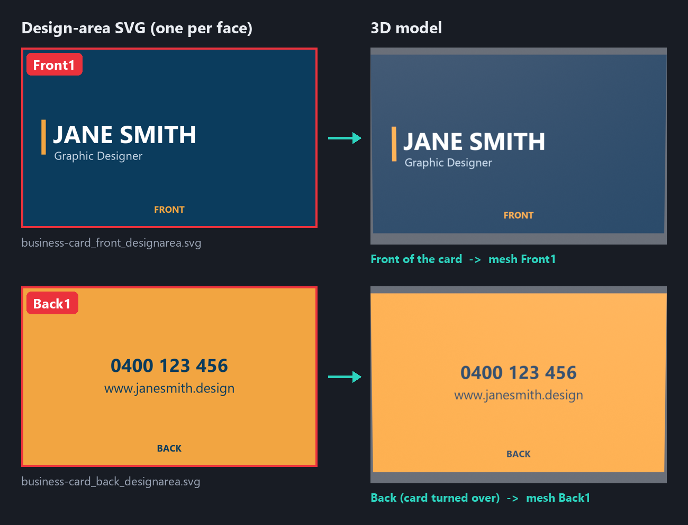
Front1 in the SVG appears on the front of the 3D card, and artwork inside Back1 appears on the back.- Source modelreal size, in mm
- Printable facesFront1, Back1…
- UVs & exportGLB + UV layout
- Design-area SVGoutlines per face
- Template SVGsone per face
- Final checkchecklist
The GLB and design-area SVG must match: SVG group ids equal the GLB mesh names, and both come from the same UV map. If either file changes, update the other.
2Prerequisites and required settings
You need the free tools below and one person comfortable with basic 3D and vector editing.
Software
| Tool | Used for | Version |
|---|---|---|
| Blender (free) | Building the model, UV mapping, GLB export | 4.0 or newer |
| Adobe Illustrator | Drawing and checking SVG files | Any current version |
| Text or code editor (VS Code, Notepad++) | Checking SVG ids and removing unsupported tags | Any |
| glTF Viewer or Babylon.js Sandbox | Checking the exported GLB | — |
Settings to use every time
| Setting | Required value |
|---|---|
| Blender scene units | Metric, millimetres, until the final scale step |
| Orientation | Front of the product faces the viewer (−Y in Blender); export with +Y Up |
| Printable faces | One mesh per face, e.g. Front1, Back1, Inside1, material Designarea |
| UV map | One per mesh, named UVMap; each printable face fills its own 0–1 square |
| Names | Letters, numbers and underscores only; no .001 suffixes, no duplicates |
| SVG size | At most 300 paths per file |
| SVG content | Flat colours and inline styles; no gradients, no clipPath, no complex mesh or nested layers |

3Part A: Build the 3D object (GLB)
The goal is a light GLB where every printable face is its own named mesh with one tidy UV map, scaled to fit the designer's viewing box.
- Build or import the product at real size. A business card is 90 × 55 mm and about 0.35 mm thick. Press N and check the Dimensions against the real product.
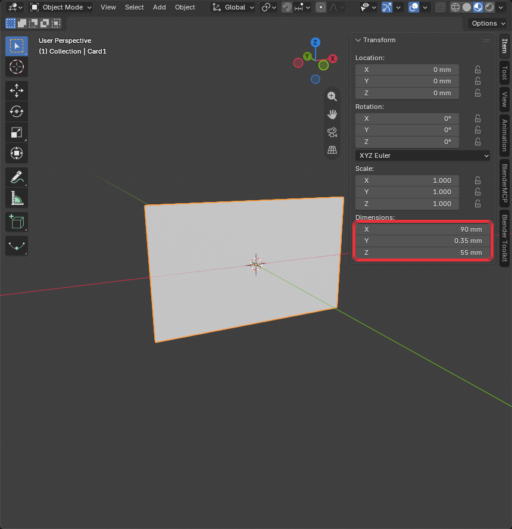
Sidebar (N) → Item → Dimensions: 90 × 0.35 × 55 mm. - Make one mesh per printable face. Add a flat plane over each face shoppers can print on, sitting about 0.05 mm outside the product so it isn't hidden. The product body itself (card edge, stand base, acrylic) keeps a plain non-printable material.
Product Printable meshes Business card, postcard, flyer Front1,Back1Folded brochure (e.g. A4 folded to DL) Outside1,Inside1QR code stand, table tent Front1,Back1(the insert only, not the base) - Name and group them. Each printable mesh sits inside an empty parent named the same without the
1:Front (Empty) → Front1 (Mesh, Designarea) Back (Empty) → Back1 (Mesh, Designarea) Card (Empty) → Card1 (Mesh, paper; not printable) - Assign the
Designareamaterial to every printable mesh: Principled BSDF, Base Color light grey#E5E5E5, Metallic 0, Roughness 0.5. No textures, colours or finishes; the designer applies the shopper's design.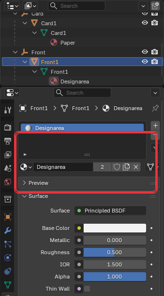
Material Properties → Designarea: Base Color #E5E5E5, Metallic 0, Roughness 0.5. - Give each face its own UV map. Unwrap each printable mesh on its own so the face fills the whole 0–1 UV square. Front and back are never placed together in one UV layout.
- The design-area SVG for the face uses the same proportions (90 : 55 → 1024 × 626), so nothing stretches.
- Turn the back face in the UV itself so its artwork reads correctly when the product is turned over. Don't use a Mapping node; it is lost on export.
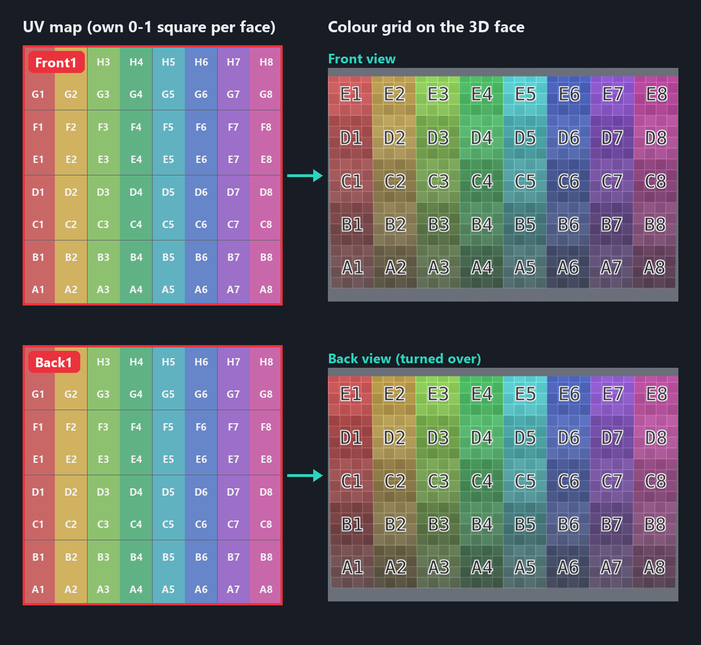
Each face has its own full UV square. The whole grid (A1–H8) appears on the front and again on the back, both reading correctly. - Apply transforms. Select all, then Object → Apply → All Transforms, so rotation is 0 and scale is 1.
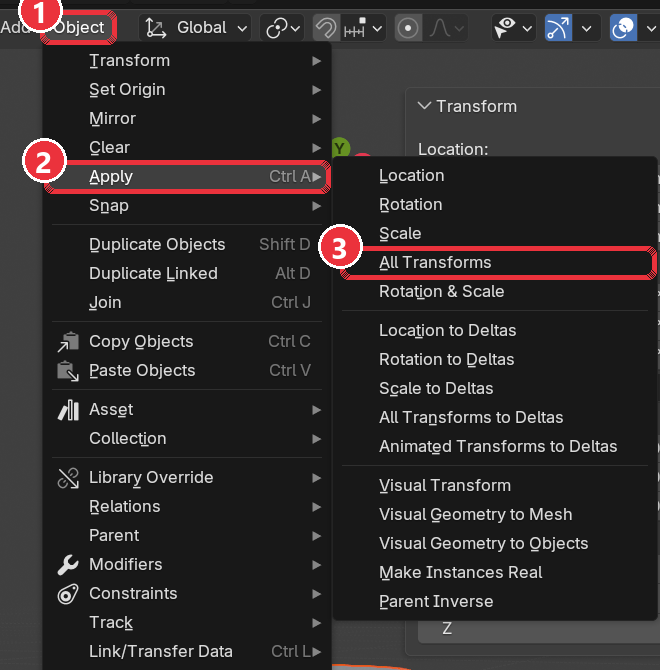
Object → Apply → All Transforms (Ctrl+A). - Scale to the designer box. Save an
_mmbackup first. Then scale the whole model uniformly so it fits inside 6.333 (W) × 4.890 (D) × 8.711 (H) units, centred on the origin. Wide products like business cards are limited by width: 90 mm becomes 6.333.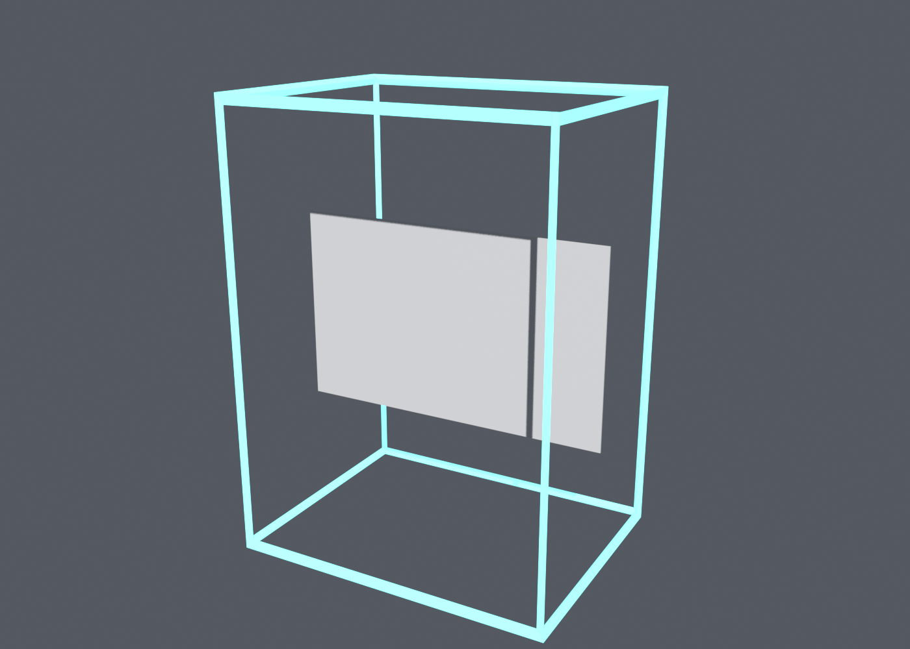
The card fills the box's width. Delete the box before exporting. - Export the GLB. File → Export → glTF 2.0:
Export setting Value Format glTF Binary (.glb) Include Visible objects; no cameras, no lights Transform +Y Up Mesh Apply Modifiers, UVs, Normals on Compression Off 
glTF 2.0 export dialog with the settings above. - Check the export. Open the GLB in a browser viewer, turn it over and confirm both printable faces are there, grey and named
Front1/Back1. Target under 5 MB.
4Part B: Create the design-area SVGs
Every printable face gets its own design-area SVG, drawn from that face's own UV map. For a business card that is two files: business-card_front_designarea.svg (group Front1) and business-card_back_designarea.svg (group Back1). Never put two faces in one file.
- Export the UV layout of one face. Select only
Front1, enter Edit Mode, then in the UV Editor choose UV → Export UV Layout. Format SVG, Fill Opacity 0, and a size in the face's proportions: width 1024, height = 1024 × face height ÷ face width. For a 90 × 55 mm card that is 1024 × 626. Repeat forBack1.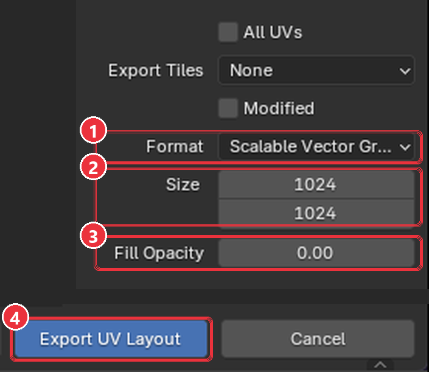
UV → Export UV Layout: (1) SVG, (2) size in the face's proportions (1024 × 626 for a business card), (3) Fill Opacity 0. - Open it in Illustrator. The artboard must be exactly the export size. Because the face fills its whole UV square, its outline is the whole artboard: one rectangle from corner to corner.
- Group and name it like the mesh. Put the outline in one group named exactly like the GLB mesh (
Front1in the front file,Back1in the back file), with a matchingdata-name. - Keep it simple. One flat fill on the group, e.g.
style="fill:#ccc;". No strokes, gradients, clipPath or classes. - Save and check. File → Save As → SVG, then More Options: SVG 1.1, Preserve Illustrator Editing Capabilities off, CSS Properties = Style Attributes. Compare both files with the example.
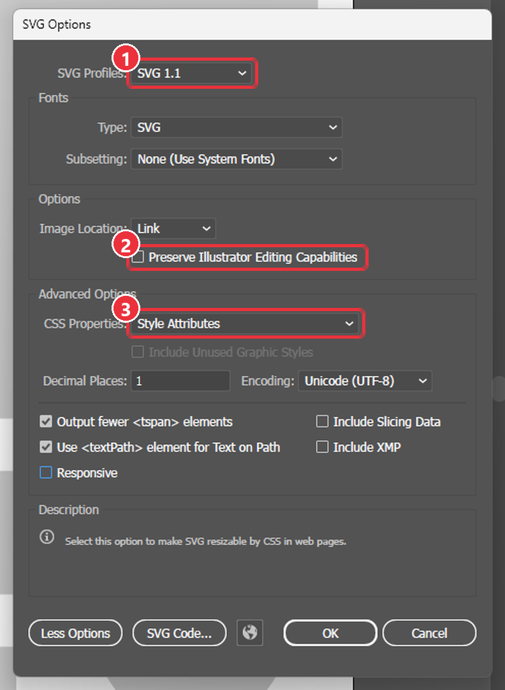
SVG Options: (1) SVG 1.1, (2) Preserve Illustrator Editing Capabilities off, (3) CSS Properties = Style Attributes. Leave Responsive unticked. 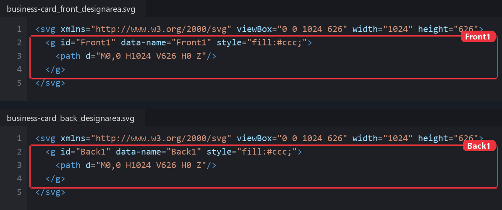
The two design-area files: same size, one group each, named Front1andBack1to match the meshes.
The coordinate link is fixed: SVG x = U × canvas width and SVG y = (1 − V) × canvas height, for each face on its own. Never move, rotate or rescale the outline after export, and keep the canvas in the face's proportions, or the design stretches on the model.
5Part C: Create the template SVGs
A template is a ready-made design shoppers personalise. Make one template per printable face: a business card has a front template and a back template, and they are used as a pair.
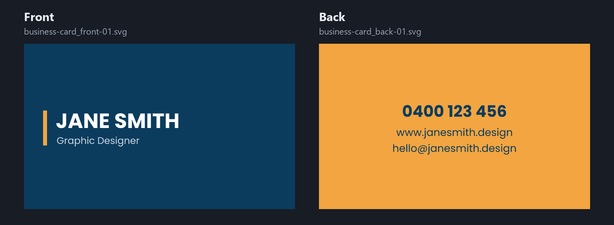
- Set the canvas from the product size. Canvas in px = size in mm × 96 ÷ 25.4. Set
viewBoxin px andwidth/heightin inches.Product Face size Canvas (px) width × height Business card 90 × 55 mm 340 × 208 3.543in × 2.165in DL (brochure panel, flyer) 99 × 210 mm 374 × 794 3.898in × 8.268in A5 148 × 210 mm 559 × 794 5.827in × 8.268in A4 210 × 297 mm 794 × 1122 8.268in × 11.693in 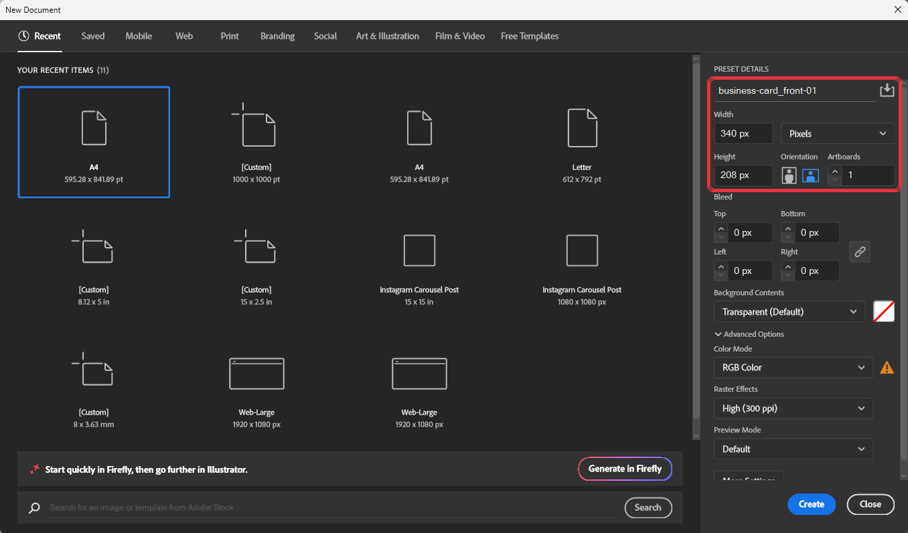
Illustrator → File → New for a business card: name, 340 × 208 px, units Pixels, Color Mode RGB. - Design inside the safe zone. Keep text and logos at least 3 mm (about 12 px) inside the trim line. Take background colours to the edge.
- Build a flat layer list. Every group is a direct child of the
<svg>, with no nested layers:Layer_1,Layer_2… large blocks (background, header, footer)Elem-1,Elem-2… shapes and decorationsText-1,Text-2… text
idanddata-name. - Keep text live. Put
xandyon both the<text>and each<tspan>, or the text jumps to the top-left corner. Do not convert text to outlines. - Keep it light. At most 300 paths per file. Merge shapes of the same colour into one compound path, and simplify traced or imported artwork.
- Remove unsupported features. No
clipPath, gradients, mesh gradients, filters or shadows,<style>tag, CSS classes, ortransform="matrix(...)". If a photo or logo is part of the design, place it as a plain<image>at its final size, with no clipping. - Save and check. Save as SVG 1.1 with Style Attributes and Responsive unticked (so width and height are kept), then open it in a text editor and compare it with the example.
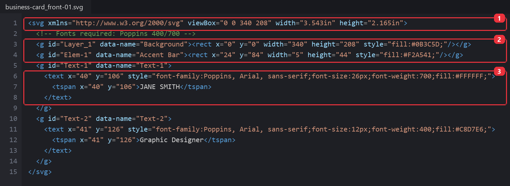
The saved front template: (1) viewBox in px with width/height in inches, (2) flat groups with id and data-name, (3) x/y on both <text> and <tspan>.
Special templates. Calendars and coupon or postcard layouts have extra required IDs and data attributes (for example <g id="calendar"> with grid data). Ask us for the matching specification before you build one.
6Guidelines, limitations and recommendations
Limits
| Item | Limit or rule |
|---|---|
| GLB file size | Target under 5 MB; keep polygons as low as the shape allows |
| Printable faces | One mesh per face shoppers print on (front, back, inside, outside) |
| Materials | Designarea on printable faces; plain values only. Mapping, Mix or procedural nodes do not survive export |
| UV maps | One per face, each filling its own 0–1 square |
| Design-area SVG | One file per face, 1024 px wide in the face's proportions, one group with id equal to the mesh name |
| Any SVG | At most 300 paths; flat colours; no gradients, clipPath, mesh or nested layers |
| Template SVG | One per face; flat layers, live text, inline styles |
| Images in templates | Plain <image> at final size, 300 DPI at print size, no clipping |
| Fonts | Only fonts enabled in your designer font list; others fall back to a default font |
Recommendations
- Start from a product we have already set up and copy its face names and UV layout.
- Build one product end to end before starting a batch.
- Keep an
_mmmaster .blend for every product so you can re-scale or re-unwrap later. - Keep file names short and paired:
business-card_front_designarea.svg,business-card_back_designarea.svg,business-card_front-01.svg,business-card_back-01.svg. - Change the GLB and the design-area SVG together. A re-unwrapped model always needs a new design-area SVG.
- Remove third-party logos or copyrighted artwork from templates unless you have the rights to use them.
7What to avoid
These are the mistakes that most often break a 3D + 2D Designer Tool product. Most of them only show up once the GLB and SVG are used together.
3D object (GLB)
| Avoid | What goes wrong | Do instead |
|---|---|---|
| Hiding parts instead of deleting them | Hidden parts still export and add weight or cover print surfaces | Delete everything shoppers can't see |
Textures, colours or finishes baked into Designarea | The shopper's design is tinted or hidden | Plain light grey, no textures |
| Flipping the back face with a Mapping node | Mapping nodes are lost on export, so text on the back is mirrored | Flip the back face in the UV itself |
| Overlapping or stretched UVs | Designs repeat, stretch or land in the wrong place | One clean UV map per mesh; square checker cells |
| A print surface inside or flush with a solid part | The surface is hidden or flickers | Place it about 0.05 mm outside |
| Transforms not applied, or exported without +Y Up | Model is tiny, huge, off-centre or lying on its side | Apply all transforms, fit the designer box, export with +Y Up |
| Heavy models (over 5 MB) or Draco compression | Slow or failed loading in the designer | Reduce polygons; leave compression off |
Names with .001, spaces or duplicates | The GLB mesh can't be matched to its SVG group | Letters, numbers and underscores only, each name unique |
Design-area SVG
| Avoid | What goes wrong | Do instead |
|---|---|---|
| Moving, rotating or rescaling outlines after UV export | Designs land in the wrong place on the model | Leave outlines exactly where Blender exported them |
| Front and back in one SVG or one UV layout | Designs land on the wrong face or overlap | One UV map and one design-area SVG per face |
| A canvas in different proportions from the face | The design stretches on the model | Width 1024, height in the face's proportions (1024 × 626 for a business card) |
| Group ids that differ from the GLB mesh names | The design doesn't appear on that part | id = mesh name exactly |
| Leaving the inner triangle and quad lines | Heavy file and a messy canvas for shoppers | Keep only the outer boundary of each island |
Strokes, classes or a <style> block | The canvas renders incorrectly | One inline fill per group |
| Changing the GLB without redoing the SVG | Old outlines no longer match the new UVs | Always update both files together |
Template SVG
| Avoid | What goes wrong | Do instead |
|---|---|---|
| Nested groups or layers | Elements can't be selected or edited separately | Flat groups directly under <svg> |
| Text converted to outlines | Shoppers can't edit the text | Keep text live |
x/y only on <tspan> | Text jumps to the top-left corner | Put x/y on both <text> and <tspan> |
| More than 300 paths | The template loads slowly or fails in the designer | Merge same-colour shapes into compound paths; simplify traced artwork |
| Gradients, mesh gradients or complex mesh objects | Not supported; the template fails or prints flat | Solid colours |
Any clipPath or clipping mask | Parts of the design disappear or the file fails | Crop images to size before placing; no clipping at all |
<style> tag, CSS classes, filters, shadows, transform="matrix(...)" | The template fails to load or looks different | Inline styles, plain x/y positions |
| One template for both sides | Front and back can't be placed on their own faces | One template per face, named as a pair |
| Fonts not enabled in the designer | A default font replaces yours | Use only enabled fonts; list them in a comment |
| Low-resolution images | Blurry print | 300 DPI at print size |
| Text or logos near the trim line | They get cut off when printed | Keep them at least 3 mm inside |
| Third-party logos or artwork | Copyright problems | Only artwork you have the rights to |
8Final checklist
Tick every item for each product. One unticked item is usually the cause of a failed preview.
3D object (GLB)
Design-area SVG
Template SVG
9Troubleshooting
| Problem | Likely cause | Fix |
|---|---|---|
| Design does not appear on a part | SVG group id differs from the mesh name, or the part has no UV map | Rename so they match exactly; unwrap the mesh and re-export both files |
| Design in the wrong place or stretched | SVG outlines moved or rescaled after export, or UVs are stretched | Re-export the UV layout and redraw; fix UVs until checker squares are even |
| Text mirrored or upside down on the back | Back face not turned in the UV, or turned with a Mapping node, which export drops | Turn the back face's UVs directly; check with the Color Grid from behind |
| Front design appears on the back | SVG groups swapped, or ids don't match the meshes | Check Front1 / Back1 ids against the GLB mesh names |
| Design stretched on one face | Design-area canvas not in the face's proportions | Re-export the UV layout at 1024 × (1024 × height ÷ width) |
| Grey edge on the model | Outline doesn't reach the canvas edge | Make the outline cover the whole canvas |
| A print surface is invisible | It sits inside a solid part | Move it just outside the body surface (about 0.05 mm) |
| Model tiny, huge or off-centre | Transforms not applied or not scaled to the designer box | Apply all transforms, scale to fit 6.333 × 4.890 × 8.711, centre on origin |
| Model lying on its side | Exported without +Y Up, or rotation not applied | Apply rotation and re-export with +Y Up |
| Template fails to load | Over 300 paths, clipPath, gradients, <style> tag or classes | Merge paths, remove clipping and gradients, re-save with inline style attributes |
| Text jumps to the top-left | x/y only on <tspan>, not on <text> | Add the same x/y to the <text> element |
| Wrong font in the designer | Font not enabled in the designer | Enable the font, or change it in the template |
| Preview loads slowly | GLB too heavy | Reduce polygons (Decimate modifier), compress textures; aim under 5 MB |
10Documentation and tools
Reference documentation
- Blender Manual: glTF 2.0 — export settings and supported materials
- Blender Manual: UV unwrapping — seams, unwrap methods, Export UV Layout
- Khronos glTF 2.0 — the file format behind GLB
- MDN: SVG element reference —
<g>,<text>,<tspan>,<image> - glTF Viewer — check a GLB in the browser